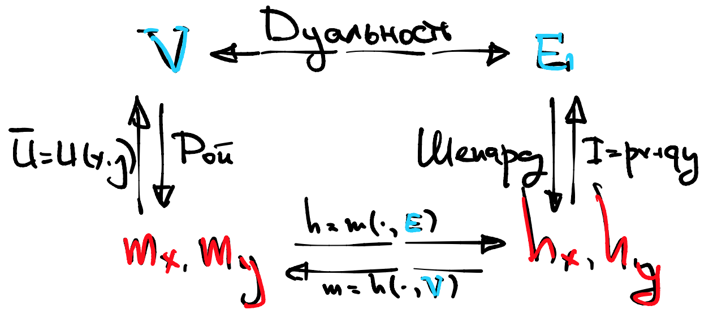

Третья лекция, часть 2#
Пусть есть для простоты два товара. Как обычно, будем обозначать их (и их спросы) как \(x,y\), а соответствующие цены как \(p,q\).
Тождество Роя#
Мы хотим связать между собой три объекта: \(x^{\ast}(p,q,I), y^{\ast}(p,q,I)\) и \(V^{\ast}(p,q,I)\). Для этого мы воспользуемся фундаментальным свойством, что косвенная полезность – это полезность, в которую подставили спросы:
Убедитесь, что это действительно корректная запись.
Что можно сделать с этим тождеством?
продифференцировать по \(p\)
продифференцировать по \(q\)
Заметим, что цены входят слева дважды, а справа не входят вообще. То есть с точки зрения дифференцирования по ценам справа стоит константа, а слева сложная функция. По правилам дифференцирования, полный дифференциал функции \(V\) по \(p\) равен:
Поскольку \(\frac{\partial I}{\partial p} = x\),
Аналогично для второй цены
Комбинируя это в векторной форме, мы получаем:
Danger
Тождество Роя Если \(\vec{x}\) - весь вектор спросов, а \(\vec{p}\) - весь вектор цен, то
Заметьте, что я меняю интерпретацию знаков \(x, p\) в зависимости от контекста. К этому надо привыкать, контекст задачи важен. Например, \(\nabla\) обычно означает вектор, но в знаменателе \(\nabla_I = \frac{\partial V}{\partial I}\) это число, потому что \(I\) это скаляр.
Зачем оно нужно?#
У тождества Роя есть две основные задачи.
Во-первых, ваши эконометрические данные могут быть в терминах косвенной полезности, а не бюджетов. Например, в социальном опросе может быть вопрос: “оцените по шкале от 1 до 10 ваше благосостояние в 2010, 2011 и 2012 году”, вместо “запишите ваш доход в 2010, 2011 и 2012 году”. Считается, что люди неохотно сообщают свои настоящий доход, богатые занижают, а бедные завышают.
Во-вторых, иногда проще запомнить косвенную полезность и вывести из нее спросы, чем запоминать спросы. Также про косвенную полезность удобно составлять задачи, чтобы потом тестировать вас на экзамене.
Теорема об Огибающей#
Это чрезвычайно важная теорема, и, в отличие от остальных, по-настоящему полезная. Лично я пользуюсь этой теоремой практически каждый день.
Рассмотрим семейство опорных функций \(f(x, p)\), где \(x\) - переменная а \(p\) - параметр. Определим огибающую \(V(p)\) как результат оптимизации функции \(f\) по какому-то статическому множеству \(Х\):
тогда…
Danger
Об Огибающей
Функция \(V(p)\) (почти всюду) дифференцируема и
… то есть наклон огибающей равен наклону опорной функции в точке касания.
Интуиция огибающей#
Представьте себе, что вы сложили вместе крупные предметы разной формы (стол, компьютер, велосипед) и, чтобы они не пылились, накрыли все эластичной пленкой.
Пленка плотно прилегла к тем предметам, которые оказались по разным причинам выше всех остальных. Можно сказать, что пленка - это (верхняя) огибающая вашего семейства опорных объектов, поскольку она лежит там, где находится самый высокий объект в каждой точке, см. иллюстрацию.
{kind=link}
Теперь посмотрим на нашу эластичную пленку. В точках касания с теми опорными объектами, что остановили ее от падения, наклон пленки равен наклону этих объектов, так как она повторяет их форму, см. иллюстрацию.
{kind=link}
Этот практически умозрительный факт и есть основная идея Теоремы об Огибающей.
Запомните следующую мантру: наклон огибающей равен наклону опорной функции в точке касания. То есть, чтобы найти наклон огибающей в точке \(p\) нужно из всех опорных функций (они индексированы через \(x\)) выбрать ту, на которую в этой точке (точка – это значение параметра \(p\)) опирается огибающая, и взять ее наклон, опять же, в пространстве параметра \(p\).
Чтобы не перепутать, какие роли у \(x\) и у \(p\), помните, что огибающая - это функция от параметра, а не от оптимизационной переменной, которая индексирует опорные функции. Соответственно, огибание происходит в пространстве параметра, а не в пространстве переменных, по которой вы оптимизировали.
Параметрами у нас, как правило, выступают цены \(p, q\) и бюджет \(I\).
Примеры#
Для демонстрации Теоремы об Огибающей, рассмотрим несколько абстрактных примеров.
Attention
Attention
Практическая польза#
Может показаться, что дифференцирование опорной функции и подстановка – это лишняя трата времени, ведь можно просто решить задачу и продифференцировать \(V\) по параметру, в лоб.
Это правда, однако если у вас абстрактная функция, вы не можете просто так ее промаксимизировать. Поэтому эта теорема очень удобна при доказательствах, но не только.
Зачастую видение огибающей позволяет сэкономить время при дифференцировании в том смысле, что вам не надо лишний раз протаскивать производную по правилу дифференцирования сложной функции.
К примеру, предположим, что у вас есть функция \(F(x, y, p)\) и eще две функции \(x = g(p), y = h(p)\). Если вас попросят найти полную производную \(F(g(p), h(p), p)\) по \(p\) то получится:
Теперь предположим, что нам стало известно, что \(x = g(p), y = h(p)\) – это, на самом деле, оптимумы функции \(F\). Тогда по Теореме об Огибающей
Получается, что Теорема об Огибающей позволяет нам игнорировать параметр, находящийся внутри оптимальной точки, при подсчете полного дифференциала. Это знание позволяет в отдельных упражнениях сэкономить 10-20 минут изнурительных вычислений.
Как насчет косвенной полезности#
Для того, чтобы активировать всю мощь Теоремы об Огибающей, вам достаточно взять любую функцию, которая является результатом оптимизации, и продифференцировать ее по любому параметру.
К примеру, мы могли бы продифференцировать косвенную полезность по ценам. Тогда Теорема об Огибающей даст вам связь этих производных с производными опорной функции в точках оптимума.
Что есть опорная функция для \(V(p,q,I)\)?
Хочется сказать, что сама полезность \(U(x,y)\) но правильный ответ – это Лагранжиан:
По крайней мере он подходит формально, так как зависит от \(p,q,I\).
Любопытным также является факт, что теорема об огибающей позволяет найти производную косвенной полезности по бюджету.
Чему равна \(\partial V/ \partial I\)?
Множителю Лагранжа \(\lambda\).
Минимизация расходов#
Сейчас мы перейдем к задаче, на первый взгляд, никак не связанной с максимизацией полезности. Если быть точными, мы будем минимизировать сумму расходов на все товары при минимально заданном таргетированном уровне полезности \(\bar U\). Для простоты пусть будут два товара \(x, y\) с ценами \(p, q\).
Сравните с классической задачей максимизации полезности
Условия Первого Порядка#
На самом деле, эти две задачи очень близко связаны. Давайте выпишем Лагранжианы в обеих задачах, но обозначим множители Лагранжа по-разному.
Поверим на слово, что обе задачи выпуклые, и выпишем УПП для поиска оптимума:
Легко видеть, что для того, чтобы решения совпали, необходимо, чтобы
во-первых, \(\gamma \lambda = 1\), но это никак не ограничивает, так как мы сами выбираем множитель Лагранжа, соответственно, мы можем всегда подогнать один к другому.
во-вторых, для любого \(I\) найдется \(\bar U\) и наоборот.
в-третьих, при достижении таргетированной полезности обязательно расходовался весь бюджет.
Последнее условие известно как Закон Вальраса. Если он выполнен и задача выпуклая, то минимизация издержек порождает абсолютно такую же систему условий первого порядка, как и максимизация полезности.
Закон Вальраса#
Для начала приведем пример полезности, при которой Закон Вальраса не выполнен, – это постоянная полезность \(U(x,y) = 1\).
Действительно, с точки зрения полезности все бюджетное множество состоит из оптимумов. Однако лишь одна точка \((x,y)=(0,0)\) по-настоящему минимизирует издержки, при таргетированной полезности \(\bar U = 0\). Что тут произошло?
Дело в том, что у полезности \(U(x,y) = 1\) толстые линии уровня. Чтобы Закон Вальраса заработал, необходимо исключить появление таких линий уровня. Это свойство называется локальной ненасыщаемостью в \(\mathbb{R}^2_{+}\).
Note
Полезность локально ненасыщаема в \(X\), если для каждой точки \(x \in X\) и для любой сколько угодно малой окрестности этой точки в \(X\), найдется вторая точка \(y\) в этой окрестности такая, что \(U(y)>U(x)\).
Большинство полезностей в нашем курсе будет обладать локальной ненасыщаемостью. Теперь мы готовы сформулировать первую теорему.
Danger
Закон Вальраса Если полезность локально ненасыщаема в \(\mathbb{R}^n_{+}\), то любое из решений задачи максимизации полезности всегда лежит на бюджетном ограничении.
Это утверждение доказывается от противного следующим образом. Пусть решение находится в бюджетном множестве, но не на бюджетной линии. Тогда существует точка в его окрестности, которая также содержится в бюджетном множестве (поскольку локальная ненасыщаемость именно в \(\mathbb{R}^n_{+}\)), но дает большую полезность. Противоречие.
Соответственно, мы убедились, что решение всегда лежит на бюджетной линии. Осталось убедиться, что для любого \(I\) найдется \(\bar U\) и наоборот.
Хиксианский и Маршаллианский спрос#
Note
Назовем Хиксианским спрос в задаче минимизации расходов и Маршаллианским спрос в задаче максимизации полезности.
Для товаров \(x,y\) будем обозначать Хиксианские спросы как
а Маршаллианские спросы как
Разрешаю писать просто \(hx, hy, mx, my\).
Тогда для задачи максимизации полезности с параметрами \((p,q,I)\) существует
такой, что задача минимизации расходов с \((p, q, \bar U_0)\) эквивалентна ей. Аналогично, для задачи минимизации расходов с \((p, q, \bar U)\) существует
такой, что задача максимизации полезности с \((p, q, I_0)\) эквивалентна ей.
Функция расходов и Дуальность#
Мы подошли к очень важному наблюдению.
Danger
Дуальность Если полезность (квази-)вогнутая и локально ненасыщаемая, то любое решение (как функция от цен) задачи минимизации расходов воспроизводится как одно из решений (опять же, как функция от цен) максимизации полезности и наоборот.
Это значит, что задача максимизации полезности и задача минимизации расходов по большому счету эквивалентны в определенном геометрическом смысле. Есть только одна проблема - у Маршаллианского и Хиксианского спросов разный набор аргументов, поэтому они не могут совпадать номинально. Для того, чтобы поправить ситуацию, нам понадобится еще одна новая функция.
Note
Назовем функцией расходов значение целевой функции в оптимуме в задаче минимизации расходов:
Это совершенно аналогично тому, как мы ввели косвенную полезность \(V(p,q,I)\) через значение целевой функции в оптимуме в задаче максимизации полезности.
Так в каком смысле они совпадают?
Любой Маршаллианский спрос \(m_x(p,q,I)\) совпадает с Хиксианским с подставленной косвенной функцией \(h_x(p,q,V(p,q,I))\). А любой Хиксианский спрос \(h_x(p,q,\bar U)\) совпадает с Маршаллианским с подставленной функцией расходов \(m_x(p,q,E(p,q,\bar U))\).
Лемма Шепарда#
Мы проходили сегодня уже Теорему об Огибающей и успешно применили ее к задаче максимизации полезности. А что произойдет, если мы применим ее к задаче минимизации расходов?
Прежде всего мы должны ответить на следующий вопрос:
Что есть опорная функция для \(E(p,q,I)\)?
Хочется сказать, что расходы \(p x + q y\), но правильный ответ – это Лагранжиан
Правда, это ничего не меняет, так как прибавка не зависит от параметров.
Теперь, когда мы знаем чему равна опорная функция, мы можем сформулировать следующую теорему:
Danger
Лемма Шепарда Если \(\vec{h}\) - весь вектор спросов, а \(\vec{p}\) - весь вектор цен, то
то есть Хиксианский спрос является градиентом функции расходов.
Лемма Шепарда – это первая манифестация Теоремы об Огибающей в нашем курсе, которых будет очень, очень много.
Как не запутаться?#
Подводя итог, у нас было две задачи: максимизации полезности и минимизации расходов. Каждая задача имела свой набор параметров: первая \((p,q,I)\) а вторая \((p,q,\bar U)\). Каждая задача произвела три объекта:
оптимальные \(m_x(p,q,I), m_y(p,q,I)\) и косвенная полезность \(V(p,q,I)\) в первой задаче
оптимальные \(h_x(p,q,\bar U), h_y(p,q,\bar U)\) и функция расходов \(E(p,q,\bar U)\) во второй задаче
Если вы решали задачу максимизации полезности и нашли Маршаллианский спрос, который зависит от \(\bar U\), то правильным ответом это быть не может, поскольку вам разрешено только пользоваться \((p,q,I)\). Это значит, что вы недоподставили где-то, недоиспользовали Дуальность.
Можно изобразить “схему перемещений” между объектами:
{kind=link}
Косвенная полезность и функция расходов тривиально выводятся из соответствующих спросов, это будет “подъем наверх”.
Далее, при помощи дуальности и спросов вы можете свободно перемещаться “горизонтально” между \(V\) и \(E\). И наоборот, при помощи дуальности и \(V\), \(E\) вы можете свободно перемещаться “горизонтально” между спросами.
Наконец, Лемма Шепарда и Тождество Роя позволяют вам “спускаться вниз” от косвенной полезности и функции расходов к Маршаллианским и Хиксианским спросам соответственно.
Примеры#
Полезность Кобб-Дуглас#
При работе с Коббом-Дугласом
приятнее всего начинать с задачи максимизации прибыли. Как мы помним, расходы на каждый из товаров делятся в пропорциях, которые не зависят ни от цен, ни от доходов. Пусть для простоты суммируются в единицу: \(\alpha + \beta = 1\), тогда
лучше всего запомнить это наизусть. Также можно запомнить (с точностью до константы \(C\)) неявную полезность в логарифмической форме с весами суммирующимися в единицу:
Нам осталось найти хиксианские спросы и функцию расходов. Но давайте не торопиться, а сначала рассмотрим наши опции. Один способ - сформулировать задачу минимизации расходов, решить ее и затем чисто механически вычислить функцию расходов. Другой способ - пройти горизонтально от косвенной полезности к функции расходов, а затем спуститься вниз по Лемме Шепарда.
В какой последовательности лучше делать?
Вывести функцию расходов по дуальности, а затем спуститься по Лемме Шепарда.
Attention
Используем дуальность, чтобы перейти от \((p,q,I)\) к \((p,q,\bar U)\):
Применяя экспоненту к правой и левой части, получаем:
И прямо так и дифференцируем ее по ценам.
Обратите внимание, что понижение степени, к которому вы привыкли в курсах матанализа, равносильно делению. Это удобно.
Леонтьевская полезность#
Когда мы имеем дело с Леонтьевской полезностью
проще сначала вывести Хиксианский спрос, потому что мы знаем, что в оптимуме все аргументы минимума должны выдавать одно и то же значение, равное таргетированному уровню полезности \(\bar U\). Таким образом:
откуда легко выводится функция расходов
а уже из нее, по дуальности, косвенную полезность
Наконец, при помощи косвенной полезности, мы можем легко превратить Хиксианский спрос в Маршаллианский.
Линейная полезность#
Когда мы имеем дело с линейной полезностью
достаточно легко вывести косвенную полезность (см. вторая лекция)
Откуда, по дуальности, функция расходов равна
Наконец, мы можем спуститься в Хиксианский спрос: